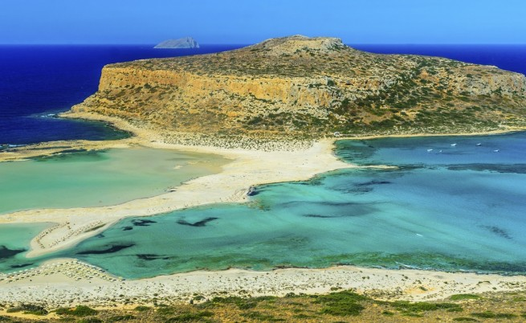
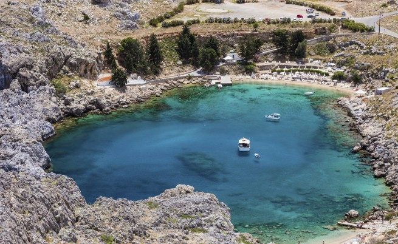
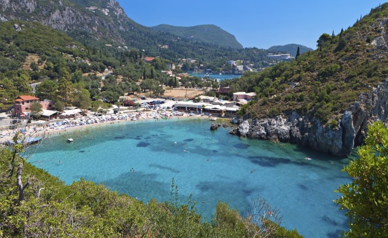
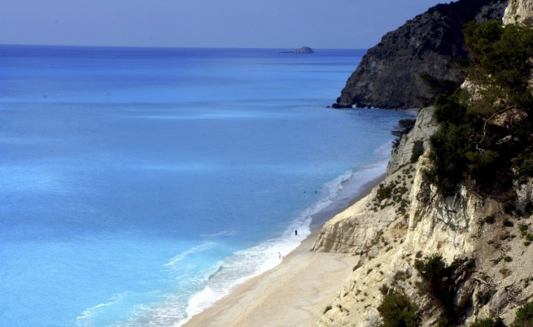
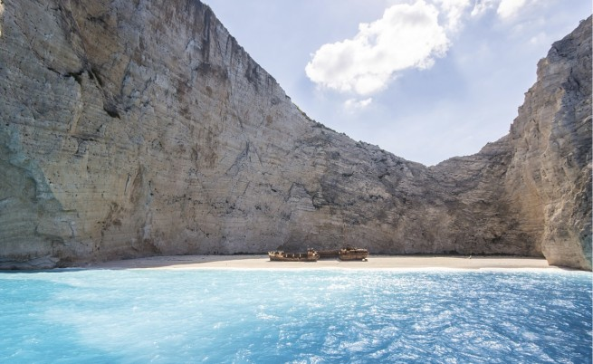
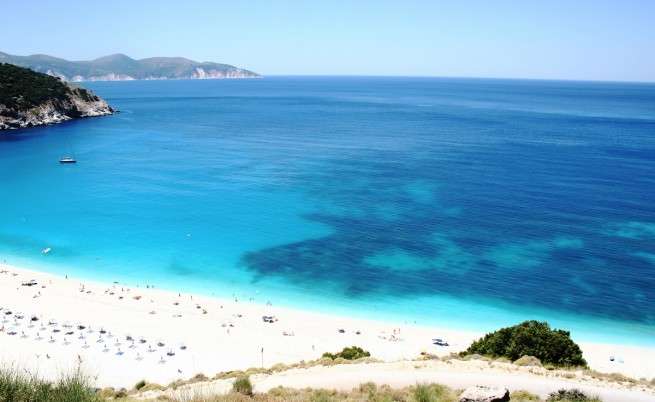
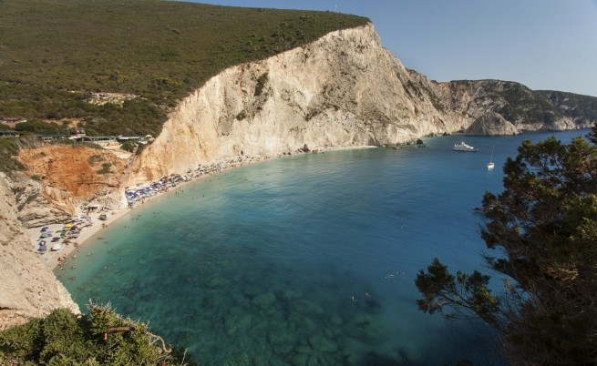
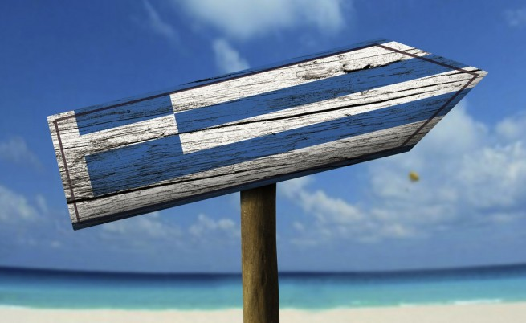
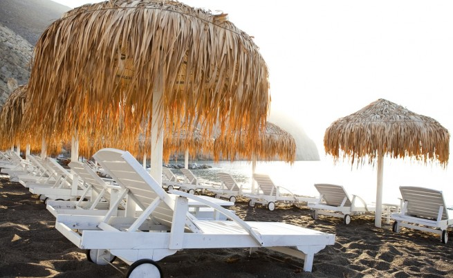

Топ 10 на най-добрите плажове в Гърция
Лято е ...
Бъдещи програмисти, стига кодене!
Хайде на море!
Повечето хора обичат да четат за пътешествия до най-различни точки на света. Рядко обаче дестинациите, които публикациите ни представят, са достъпни – те са прекалено далечни, твърде екзотични и... изискват доста средства.
Ето защо днес ще ви представим една доста по-достъпна за българите дестинация – Гърция.
Сайтът "Трипадвайзър" представя 10-те най-добри плажа в нашата южна съседка.
1. Елафониси, Гърция
Хич и не е случайно, че този гръцки плаж попада в топ 6 на най-добрите плажове в Европа за 2014.

Елафониси се намира на югозападното крайбрежие на Крит - пети по големина остров в Средиземно море. Пясъчната ивица е изключително светла и с розов нюанс, а водите са прозрачни. Заради климата плажът е една от перфектните дестинации по всяко време на годината.
2. Плажът Балос и лагуната Кисамос, Крит
Заливът Балос със сигурност е едно от най-красивите места по гръцкото крайбрежие. Няколкото круиза от Кисамос минават наблизо и имат лесен достъп до плажа Балос.
Природният резерват "Залив Балос" се намира в източната част на остров Крит. Макар че през лятото е пълно с туристи, тук се срещат редки местни растителни видове, които другаде са отстъпили място на хотелски комплекси.
3. Плажът Свети Павел, Линдос
Линдос е средновековно селище, което се намира на остров Родос. Изградено е от типичните за Гърция бели къщи и китни калдъръмени улички. Над града пък се извисява акрополът на Линдос, който предлага невероятни гледки към заобикалящите го пристанища и брегове. Близо се намират плажовете Линдос и Свети Павел, които също се отличават с чист пясък и тюркоазени води
4. Палеокастрица, Корфу, Йонийски острови
Палеокастрица е курорт и община в префектурата на остров Корфу. Отличава се със своите широки плажни ивици. Курортът е разположен на два бряга – с очарователни скали, които го обграждат. Плажът има и красиви пещери.
5. Егремни, Лефкада, Йонийските острови
Егремни е един от трите най-известни плажа на Лефкада, заедно с Порто Кацики и Катизма. Намира се на югозападното крайбрежие на острова. Поради дължината си (почти 3 км) никога не става пренаселен, въпреки круизните корабчета, които понякога стоварват туристи. Това е една от добре пазените тайни на Гърция. Красив пейзаж, кристално чисти води и едър бял <пясък class="">
6. Навагио, Закинтос, Йонийските острови
Друг самотен остров, до който може да стигнете само по вода. Едър бял пясък, дълбоки сини води, впечатляващи отвесни скали и пещери правят товя място един от най-красивитe гръцки плажове, а изоставения на брега кораб Панайотис превръща Навагио в едно наистина специално място.
7. Миртос, Кефалония
Плажът Миртос преди години беше обявен за най-добър плаж на Гърция от тяхното министерство на туризма. Кристалните води и ярко белите морски камъни са се насталини удобно сред стръмните скали на западния бряг на Кефалония.
8. Порто Кацики, Лефкада, Йонийските острови
Порто Кацики също е сред известните плажове на Лефкада. Представлява тясна ивица пясък, разположена под високи бели скали. Плажът се намира на югозападния край на острова. Далеч е от градове и села, но до него може да се стигне с кола.
9. Сталис, Крит
Сталис се намира на североизточното крайбрежие на остров Крит между Малия и Херсонисос. Много популярна дестинация за британските, холандските и германските туристи. И отново – чиста плажна ивица и прозрачни води.
10. Периса, Санторини
Санторини (с официално име Тира или Фира) е най-известният гръцки остров. До него се стига с ферибот или самолет. Пейзажът на Санторини е уникален и не прилича на никое друго място в Гърция или по света. Най-известните плажни курорти на Санторини са Камари и Периса/Периволос.
Източник: "Трипадвайзър"